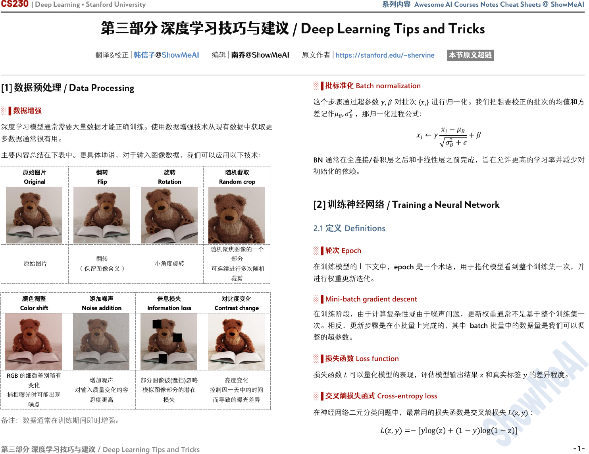

CS230 | Deep Learning • Stanford University 系列内容 Awesome AI Courses Notes Cheat Sheets @ ShowMeAI
第三部分 深度学习技巧与建议 /
Deep Learning Tips and Tricks
第三部分 深度学习技巧与建议
/ Deep Learning Tips and Tricks
翻译&校正 | 韩信子@ShowMeAI 编辑 | 南乔@ShowMeAI 原文作者 | https://stanford.edu/~shervine 本节原文超链
[1] 数据预处理 / Data Processing
░▐ 数据增强
深度学习模型通常需要大量数据才能正确训练。使用数据增强技术从现有数据中获取更
多数据通常很有用。
主要内容总结在下表中。更具体地说，对于输入图像数据，我们可以应用以下技术：
░▐ 批标准化
Batch normalization
这个步骤通过超参数
,
对批次
{
}
进行归一化。我们把想要校正的批次的均值和方
差记作
,
2
，那归一化过程公式：
←
−
2
+
+
BN 通常在全连接/卷积层之后和非线性层之前完成，旨在允许更高的学习率并减少对
初始化的依赖。
[2] 训练神经网络 / Training a Neural Network
2.1 定义 Definitions
░▐ 轮次 Epoch
在训练模型的上下文中，epoch 是一个术语，用于指代模型看到整个训练集一次，并
进行权重更新迭代。
░▐
Mini-batch gradient descent
在训练阶段，由于计算复杂性或由于噪声问题，更新权重通常不是基于整个训练集一
次。相反，更新步骤是在小批量上完成的，其中 batch 批量中的数据量是我们可以调
整的超参数。
░▐ 损失函数 Loss function
损失函数
可以量化模型的表现，评估模型输出结果
和真实标签
的差异程度。
░▐ 交叉熵损失函式 Cross-entropy loss
在神经网络二元分类问题中，最常用的损失函数是交叉熵损失
,
：
,
=−[log +
1−
log
1−
]